Lab 5: Clustering
High Dimensional Data Analysis practicals
Milan Malfait and Leo Fuhrhop
24 Feb 2022
(Last updated: 2025-11-09)
Change log
## Install necessary packages with:
# install.packages(c("mclust", "gclus", "tidyverse", "gridExtra"))
# if (!requireNamespace("remotes", quietly = TRUE)) {
# install.packages("remotes")
# }
# remotes::install_github("vqv/ggbiplot")
library(mclust)
library(gclus) # contains the 'wine' data
library(ggbiplot)
library(tidyverse)
library(gridExtra)
theme_set(theme_minimal())1 The wine data
In this lab session, we will explore the wine data, following the
example analysis from Scrucca et al. (2016).
This dataset provides 13 measurements obtained from a chemical analysis of 178 wines grown in the same region in Italy but derived from three different cultivars (Barolo, Grignolino, Barbera). The original cultivar labels are provided in the dataset.
We will apply different clustering algorithms and validate them by comparing how well the clusters capture the original classes.
data("wine", package = "gclus")
class <- factor(wine$Class, levels = 1:3, labels = c("Barolo", "Grignolino", "Barbera"))
table(class)
#> class
#> Barolo Grignolino Barbera
#> 59 71 48
X <- as.matrix(wine[, -1])
summary(X)
#> Alcohol Malic Ash Alcalinity
#> Min. :11.03 Min. :0.740 Min. :1.360 Min. :10.60
#> 1st Qu.:12.36 1st Qu.:1.603 1st Qu.:2.210 1st Qu.:17.20
#> Median :13.05 Median :1.865 Median :2.360 Median :19.50
#> Mean :13.00 Mean :2.336 Mean :2.367 Mean :19.49
#> 3rd Qu.:13.68 3rd Qu.:3.083 3rd Qu.:2.558 3rd Qu.:21.50
#> Max. :14.83 Max. :5.800 Max. :3.230 Max. :30.00
#> Magnesium Phenols Flavanoids Nonflavanoid
#> Min. : 70.00 Min. :0.980 Min. :0.340 Min. :0.1300
#> 1st Qu.: 88.00 1st Qu.:1.742 1st Qu.:1.205 1st Qu.:0.2700
#> Median : 98.00 Median :2.355 Median :2.135 Median :0.3400
#> Mean : 99.74 Mean :2.295 Mean :2.029 Mean :0.3619
#> 3rd Qu.:107.00 3rd Qu.:2.800 3rd Qu.:2.875 3rd Qu.:0.4375
#> Max. :162.00 Max. :3.880 Max. :5.080 Max. :0.6600
#> Proanthocyanins Intensity Hue OD280
#> Min. :0.410 Min. : 1.280 Min. :0.4800 Min. :1.270
#> 1st Qu.:1.250 1st Qu.: 3.220 1st Qu.:0.7825 1st Qu.:1.938
#> Median :1.555 Median : 4.690 Median :0.9650 Median :2.780
#> Mean :1.591 Mean : 5.058 Mean :0.9575 Mean :2.612
#> 3rd Qu.:1.950 3rd Qu.: 6.200 3rd Qu.:1.1200 3rd Qu.:3.170
#> Max. :3.580 Max. :13.000 Max. :1.7100 Max. :4.000
#> Proline
#> Min. : 278.0
#> 1st Qu.: 500.5
#> Median : 673.5
#> Mean : 746.9
#> 3rd Qu.: 985.0
#> Max. :1680.0We will use a PCA to visualize the data, along with the class labels, in a low-dimensional space. This will allow us to interpret the results of the clustering algorithms more easily.
Tasks
2. Create a biplot of the first two PCs. Color each observation by its class label. Interpret the PCs. How distinguishable are the classes with respect to the PCs?
Solution
Using ggbiplot:
cols <- c("Barolo" = "#28a028", "Grignolino" = "#da6852", "Barbera" = "#0078cd")
ggbiplot(wine_pca, groups = class) +
scale_color_manual(values = cols) +
labs(color = "True labels") +
theme(aspect.ratio = 0.8, legend.position = "top")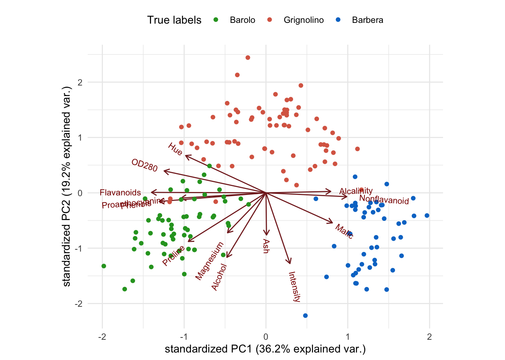
Alternatively, using base R plotting:
Zk <- wine_pca$x[, 1:2]
Vk <- wine_pca$rotation[, 1:2]
plot(Zk, pch = 20,
col = cols[class],
xlab = "PC1", ylab = "PC2"
)
legend("topleft", levels(class),
col = cols,
pch = 19
)
alpha <- 5 # rescaling
for (i in 1:13) {
arrows(0, 0, alpha * Vk[i, 1], alpha * Vk[i, 2], length = 0.2, col = "#8f4040")
text(alpha * Vk[i, 1], alpha * Vk[i, 2], rownames(Vk)[i], col = "#8f4040")
}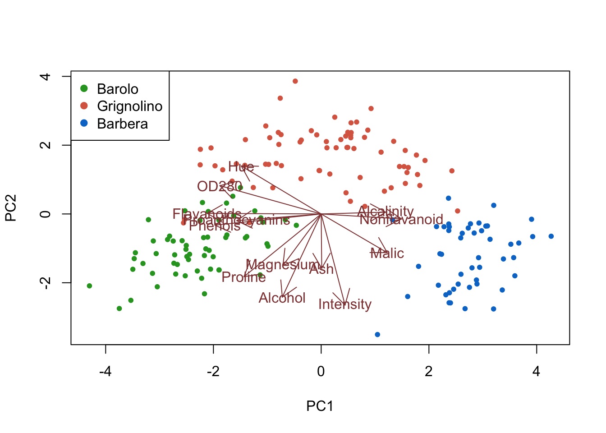
Interpretation: Low values on PC1 correspond to heavier, aged, more structured wines, while high values indicate fresher, less heavy, younger wines. High values on PC2 correspond to lighter-colored wines with lower alcohol content. Importantly, the three classes are quite clearly visually separated with little overlap between them. We can thus rely on the biplot to visually investigate how well a clustering algorithm recovers the true classes.
2 Hierarchical clustering
Tasks
1. Perform hierarchical clustering of the wine data, using a Euclidean distance matrix and the complete-linkage algorithm (see ?hclust).

3. Use cutree to select three clusters from the hierarchical clustering. Recreate the PCA biplot from Section 1, but color each observation according to its cluster. Compare the resulting biplot to the earlier one from Section 1.
Solution
# Select three clusters
hc_clusters <- cutree(hc, k = 3)
# Tabulate clusters against true classes
table(class, hc_clusters)
#> hc_clusters
#> class 1 2 3
#> Barolo 43 16 0
#> Grignolino 0 15 56
#> Barbera 0 21 27Biplot with ggbiplot:
plot1 <- ggbiplot(wine_pca, groups = class) +
scale_color_manual(values = cols) +
labs(color = "True labels") +
theme(aspect.ratio = 0.8, legend.position = "top")
plot2 <- ggbiplot(wine_pca, groups = factor(hc_clusters)) +
scale_color_manual(values = c("#9d05f4", "#01d9d9", "#f4dc00")) +
labs(color = "HC clusters") +
theme(aspect.ratio = 0.8, legend.position = "top")
grid.arrange(plot1, nullGrob(), plot2, ncol = 3, widths = c(1, 0.1, 1))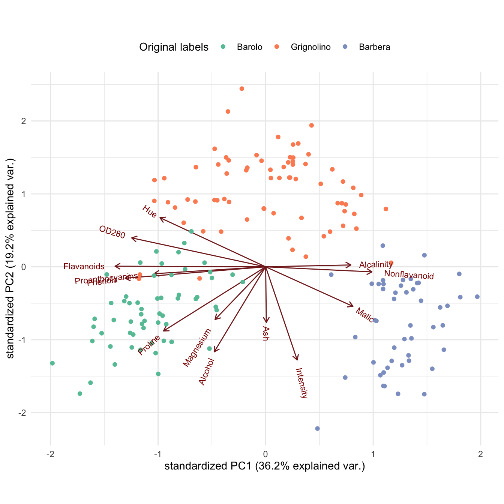
Alternatively, using base R plotting:
par(mfrow = c(1, 2))
# True class labels
plot(Zk, pch = 20,
col = cols[class],
xlab = "PC1", ylab = "PC2"
)
legend("topleft", levels(class),
col = cols,
pch = 19
)
alpha <- 5 # rescaling
for (i in 1:13) {
arrows(0, 0, alpha * Vk[i, 1], alpha * Vk[i, 2], length = 0.2, col = "#8f4040")
text(alpha * Vk[i, 1], alpha * Vk[i, 2], rownames(Vk)[i], col = "#8f4040")
}
cluster_cols <- c("1" = "#9d05f4", "2" = "#01d9d9", "3" = "#f4dc00")
# Clusters
plot(Zk, pch = 20,
col = cluster_cols[factor(hc_clusters)],
xlab = "PC1", ylab = "PC2"
)
legend("topleft", levels(factor(hc_clusters)),
col = cluster_cols,
pch = 19
)
alpha <- 5 # rescaling
for (i in 1:13) {
arrows(0, 0, alpha * Vk[i, 1], alpha * Vk[i, 2], length = 0.2, col = "#8f4040")
text(alpha * Vk[i, 1], alpha * Vk[i, 2], rownames(Vk)[i], col = "#8f4040")
}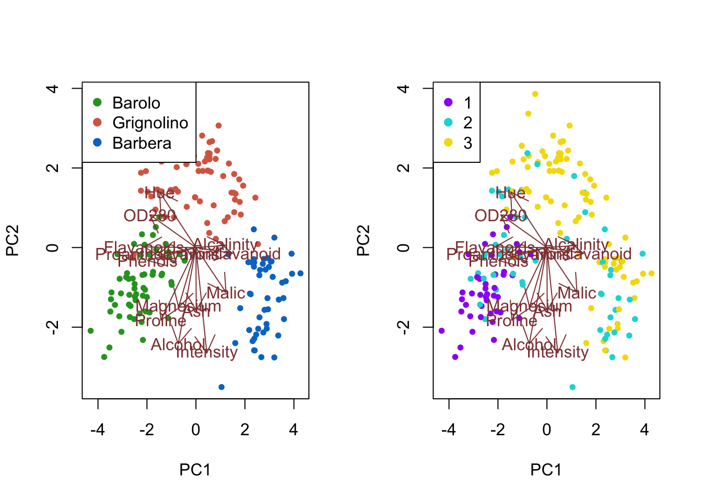
Interpretation: The first cluster corresponds to most of the Barolo class, but the second cluster overlaps with all three classes, and the third cluster captures wines from both the Grignolino and the Barbera class. Overall, the three clusters do not recover the true class labels.
Bonus: can you improve the results by using different distance metrics or linkages?
3 Model-based clustering
Tasks
1. Use mclust::Mclust() to perform model-based clustering on the wine data.
Solution
mc <- Mclust(X)
summary(mc)
#> ----------------------------------------------------
#> Gaussian finite mixture model fitted by EM algorithm
#> ----------------------------------------------------
#>
#> Mclust VVE (ellipsoidal, equal orientation) model with 3 components:
#>
#> log-likelihood n df BIC ICL
#> -3015.335 178 158 -6849.391 -6850.734
#>
#> Clustering table:
#> 1 2 3
#> 59 69 50
summary(mc$BIC)
#> Best BIC values:
#> VVE,3 EVE,4 VVE,4
#> BIC -6849.391 -6873.61648 -6885.47222
#> BIC diff 0.000 -24.22499 -36.080732. Visualize the clustering via pairwise plots. Plot the BIC (Bayesian information criterion) values and interpret the results.
Hint: Check ?plot.Mclust.
Solution
# Pairwise clustering plots
plot(mc, what = "classification")
# BIC plot; exclude two models with very low BIC
plot(mc, what = "BIC", ylim = range(mc$BIC[, -(1:2)], na.rm = TRUE),
legendArgs = list(x = "bottomleft")
)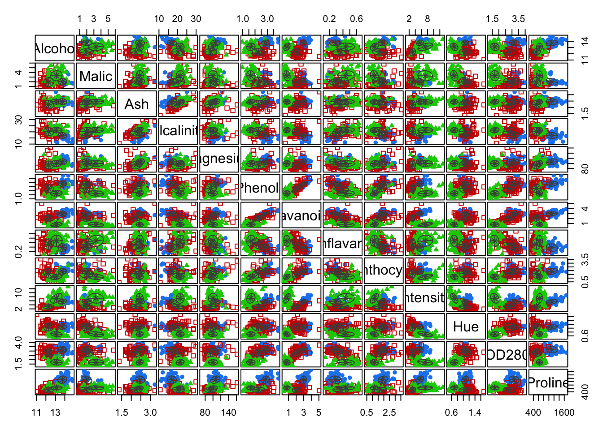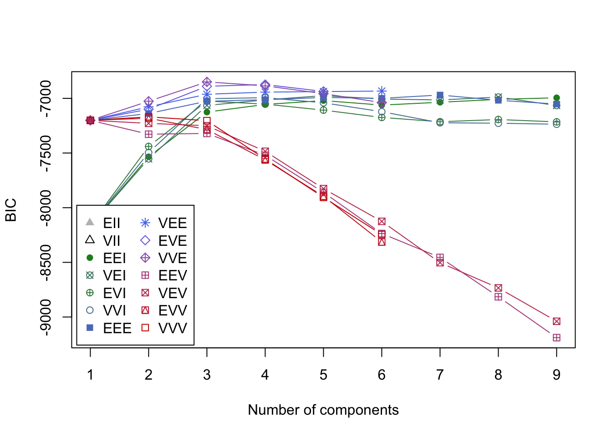
Interpretation: A three-component mixture with covariances having different shapes and volumes but the same orientation (VVE) results in the highest BIC.
3. Recreate the PCA biplot from Section 1, but color each observation according to its cluster. Compare the resulting biplot to the earlier ones.
Solution
# Tabulate clusters against true classes
table(class, mc$classification)
#>
#> class 1 2 3
#> Barolo 59 0 0
#> Grignolino 0 69 2
#> Barbera 0 0 48Biplot with ggbiplot:
plot1 <- ggbiplot(wine_pca, groups = class) +
scale_color_manual(values = cols) +
labs(color = "True labels") +
theme(aspect.ratio = 0.8, legend.position = "top")
plot2 <- ggbiplot(wine_pca, groups = factor(mc$classification)) +
scale_color_manual(values = c("#9d05f4", "#01d9d9", "#f4dc00")) +
labs(color = "Mclust clusters") +
theme(aspect.ratio = 0.8, legend.position = "top")
grid.arrange(plot1, nullGrob(), plot2, ncol = 3, widths = c(1, 0.1, 1))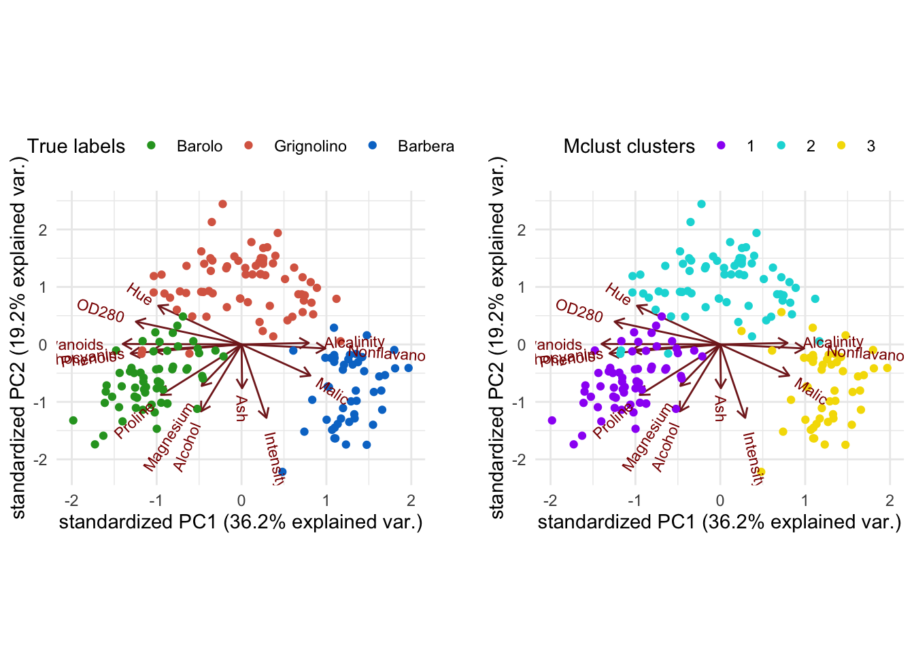
Alternatively, using base R plotting:
par(mfrow = c(1, 2))
# True class labels
plot(Zk, pch = 20,
col = cols[class],
xlab = "PC1", ylab = "PC2"
)
legend("topleft", levels(class),
col = cols,
pch = 19
)
alpha <- 5 # rescaling
for (i in 1:13) {
arrows(0, 0, alpha * Vk[i, 1], alpha * Vk[i, 2], length = 0.2, col = "#8f4040")
text(alpha * Vk[i, 1], alpha * Vk[i, 2], rownames(Vk)[i], col = "#8f4040")
}
cluster_cols <- c("1" = "#9d05f4", "2" = "#01d9d9", "3" = "#f4dc00")
# Clusters
plot(Zk, pch = 20,
col = cluster_cols[factor(mc$classification)],
xlab = "PC1", ylab = "PC2"
)
legend("topleft", levels(factor(mc$classification)),
col = cluster_cols,
pch = 19
)
alpha <- 5 # rescaling
for (i in 1:13) {
arrows(0, 0, alpha * Vk[i, 1], alpha * Vk[i, 2], length = 0.2, col = "#8f4040")
text(alpha * Vk[i, 1], alpha * Vk[i, 2], rownames(Vk)[i], col = "#8f4040")
}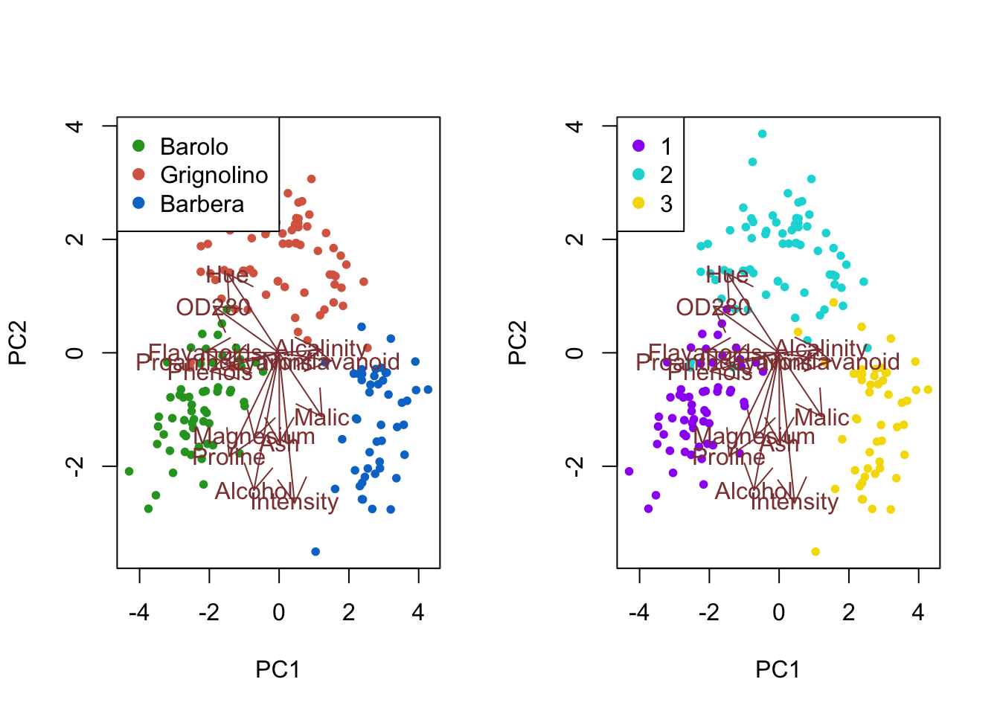
Interpretation: The first cluster corresponds to the Barolo class, the second cluster to the Grignolino class and the third cluster to Barbera. Overall, the three clusters recover the true class labels very well, with only two Grignolino wines falsely assigned to the third cluster (Barbera).
4. Select an appropriate number of PCs from the PCA. Repeat the model-based clustering on the PCs. How do the results compare to those on the full data?
Solution
# Proportion of variance explained by each PC
wine_prop_var <- data.frame(
PC = 1:ncol(wine_pca$x),
var = wine_pca$sdev^2 / sum(wine_pca$sdev^2)
)
ggplot(wine_prop_var, aes(PC, var)) +
geom_point() +
geom_line() +
geom_vline(xintercept = 7.5, col = "firebrick") +
scale_x_continuous(breaks = 1:ncol(wine_pca$x)) +
labs(y = "Proportion of variance")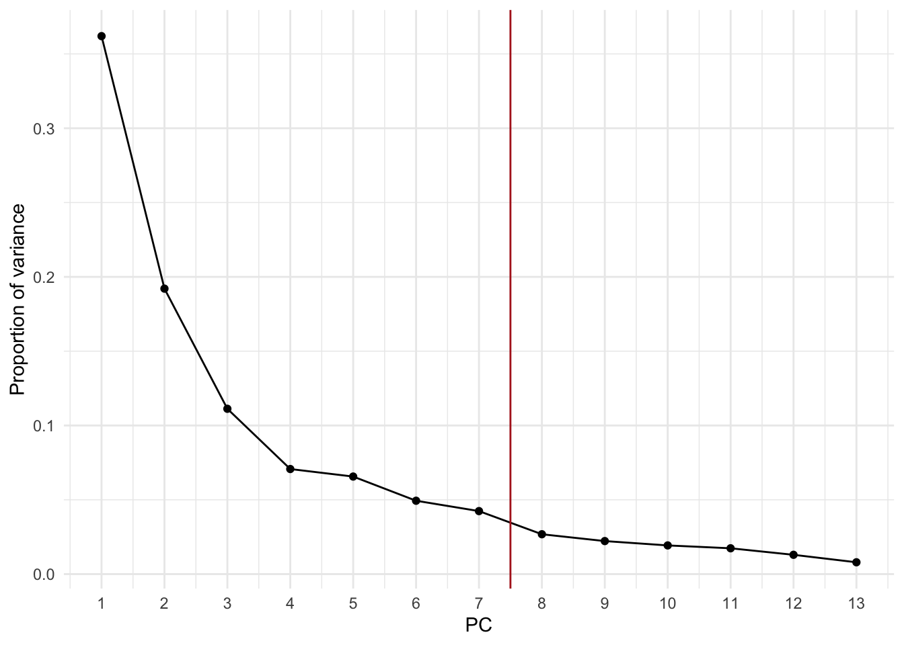
The first 7 PCs explain about 92% of the variance in the wine data.
# Select the first k PCs
k <- 7
pca_X <- wine_pca$x[, 1:k]
# Refit the model-based clustering
mc2 <- Mclust(pca_X)
summary(mc2)
#> ----------------------------------------------------
#> Gaussian finite mixture model fitted by EM algorithm
#> ----------------------------------------------------
#>
#> Mclust VEI (diagonal, equal shape) model with 5 components:
#>
#> log-likelihood n df BIC ICL
#> -1719.764 178 50 -3698.617 -3725.317
#>
#> Clustering table:
#> 1 2 3 4 5
#> 53 25 19 34 47
summary(mc2$BIC)
#> Best BIC values:
#> VEI,5 VEI,4 VEI,6
#> BIC -3698.617 -3700.939851 -3704.927637
#> BIC diff 0.000 -2.322571 -6.310357A five-component mixture with diagonal covariances having equal shape, but varying volume (VEI), results in the highest BIC.
# Tabulate clusters against true classes
table(class, mc2$classification)
#>
#> class 1 2 3 4 5
#> Barolo 53 6 0 0 0
#> Grignolino 0 16 18 34 3
#> Barbera 0 3 1 0 44Biplot with ggbiplot:
plot1 <- ggbiplot(wine_pca, groups = class) +
scale_color_manual(values = cols) +
labs(color = "True labels") +
theme(aspect.ratio = 0.8, legend.position = "top")
plot2 <- ggbiplot(wine_pca, groups = factor(mc2$classification)) +
scale_color_manual(values = c("#9d05f4", "#01d9d9", "#01d9d9", "#01d9d9", "#f4dc00")) +
labs(color = "Mclust clusters") +
theme(aspect.ratio = 0.8, legend.position = "top")
grid.arrange(plot1, nullGrob(), plot2, ncol = 3, widths = c(1, 0.1, 1))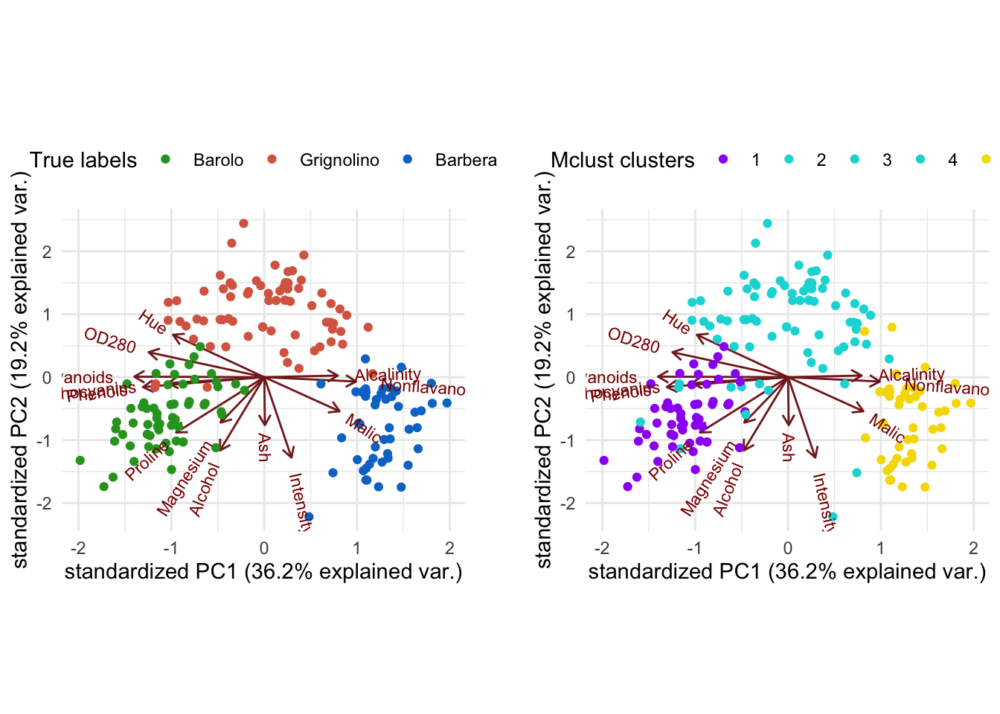
Alternatively, using base R plotting:
par(mfrow = c(1, 2))
# True class labels
plot(Zk, pch = 20,
col = cols[class],
xlab = "PC1", ylab = "PC2"
)
legend("topleft", levels(class),
col = cols,
pch = 19
)
alpha <- 5 # rescaling
for (i in 1:13) {
arrows(0, 0, alpha * Vk[i, 1], alpha * Vk[i, 2], length = 0.2, col = "#8f4040")
text(alpha * Vk[i, 1], alpha * Vk[i, 2], rownames(Vk)[i], col = "#8f4040")
}
cluster_cols <- c("1" = "#9d05f4", "2" = "#01d9d9", "3" = "#01d9d9", "4" = "#01d9d9", "5" = "#f4dc00")
# Clusters
plot(Zk, pch = 20,
col = cluster_cols[factor(mc2$classification)],
xlab = "PC1", ylab = "PC2"
)
legend("topleft", levels(factor(mc2$classification)),
col = cluster_cols,
pch = 19
)
alpha <- 5 # rescaling
for (i in 1:13) {
arrows(0, 0, alpha * Vk[i, 1], alpha * Vk[i, 2], length = 0.2, col = "#8f4040")
text(alpha * Vk[i, 1], alpha * Vk[i, 2], rownames(Vk)[i], col = "#8f4040")
}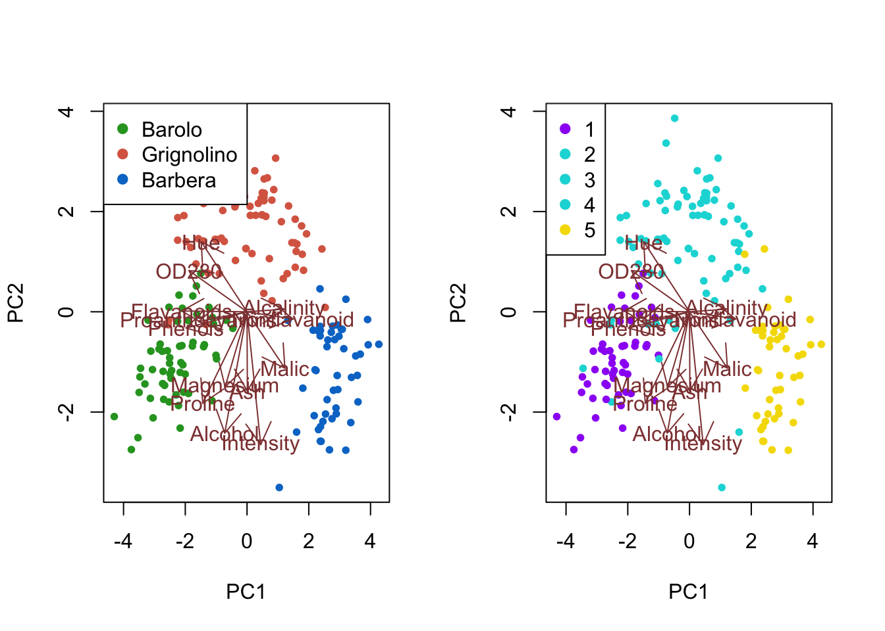
Interpretation: The first cluster corresponds to most of the Barolo class. The fifth color mainly corresponds to the Barbera class, while containing a few Grignolino wines. Combining the second, third and fourth cluster recovers most of the Grignolino class, with some overlap with the remaining classes. Overall, after combining the three smaller clusters, the clustering recovers the true class labels fairly well, though not quite as closely as the clustering on the original data.
Additional resources
- Section 14.3 of Hastie, Tibshirani, and Friedman (2009)
Session info
Session info
#> [1] "2025-11-09 16:06:01 CET"
#> ─ Session info ───────────────────────────────────────────────────────────────
#> setting value
#> version R version 4.5.2 (2025-10-31)
#> os macOS Sequoia 15.6
#> system aarch64, darwin20
#> ui X11
#> language (EN)
#> collate en_US.UTF-8
#> ctype en_US.UTF-8
#> tz Europe/Brussels
#> date 2025-11-09
#> pandoc 3.6.3 @ /Applications/RStudio.app/Contents/Resources/app/quarto/bin/tools/aarch64/ (via rmarkdown)
#> quarto 1.7.32 @ /Applications/RStudio.app/Contents/Resources/app/quarto/bin/quarto
#>
#> ─ Packages ───────────────────────────────────────────────────────────────────
#> package * version date (UTC) lib source
#> bookdown 0.45 2025-10-03 [1] CRAN (R 4.5.0)
#> bslib 0.9.0 2025-01-30 [1] CRAN (R 4.5.0)
#> cachem 1.1.0 2024-05-16 [1] CRAN (R 4.5.0)
#> cli 3.6.5 2025-04-23 [1] CRAN (R 4.5.0)
#> cluster * 2.1.8.1 2025-03-12 [1] CRAN (R 4.5.2)
#> digest 0.6.37 2024-08-19 [1] CRAN (R 4.5.0)
#> dplyr * 1.1.4 2023-11-17 [1] CRAN (R 4.5.0)
#> evaluate 1.0.5 2025-08-27 [1] CRAN (R 4.5.0)
#> farver 2.1.2 2024-05-13 [1] CRAN (R 4.5.0)
#> fastmap 1.2.0 2024-05-15 [1] CRAN (R 4.5.0)
#> forcats * 1.0.1 2025-09-25 [1] CRAN (R 4.5.0)
#> gclus * 1.3.3 2025-03-28 [1] CRAN (R 4.5.0)
#> generics 0.1.4 2025-05-09 [1] CRAN (R 4.5.0)
#> ggbiplot * 0.55 2025-11-05 [1] Github (vqv/ggbiplot@f7ea76d)
#> ggplot2 * 4.0.0 2025-09-11 [1] CRAN (R 4.5.0)
#> glue 1.8.0 2024-09-30 [1] CRAN (R 4.5.0)
#> gridExtra * 2.3 2017-09-09 [1] CRAN (R 4.5.0)
#> gtable 0.3.6 2024-10-25 [1] CRAN (R 4.5.0)
#> hms 1.1.4 2025-10-17 [1] CRAN (R 4.5.0)
#> htmltools 0.5.8.1 2024-04-04 [1] CRAN (R 4.5.0)
#> jquerylib 0.1.4 2021-04-26 [1] CRAN (R 4.5.0)
#> jsonlite 2.0.0 2025-03-27 [1] CRAN (R 4.5.0)
#> knitr 1.50 2025-03-16 [1] CRAN (R 4.5.0)
#> labeling 0.4.3 2023-08-29 [1] CRAN (R 4.5.0)
#> lifecycle 1.0.4 2023-11-07 [1] CRAN (R 4.5.0)
#> lubridate * 1.9.4 2024-12-08 [1] CRAN (R 4.5.0)
#> magrittr 2.0.4 2025-09-12 [1] CRAN (R 4.5.0)
#> mclust * 6.1.2 2025-10-31 [1] CRAN (R 4.5.0)
#> pillar 1.11.1 2025-09-17 [1] CRAN (R 4.5.0)
#> pkgconfig 2.0.3 2019-09-22 [1] CRAN (R 4.5.0)
#> plyr * 1.8.9 2023-10-02 [1] CRAN (R 4.5.0)
#> purrr * 1.2.0 2025-11-04 [1] CRAN (R 4.5.0)
#> R6 2.6.1 2025-02-15 [1] CRAN (R 4.5.0)
#> RColorBrewer 1.1-3 2022-04-03 [1] CRAN (R 4.5.0)
#> Rcpp 1.1.0 2025-07-02 [1] CRAN (R 4.5.0)
#> readr * 2.1.5 2024-01-10 [1] CRAN (R 4.5.0)
#> rlang 1.1.6 2025-04-11 [1] CRAN (R 4.5.0)
#> rmarkdown 2.30 2025-09-28 [1] CRAN (R 4.5.0)
#> rstudioapi 0.17.1 2024-10-22 [1] CRAN (R 4.5.0)
#> S7 0.2.0 2024-11-07 [1] CRAN (R 4.5.0)
#> sass 0.4.10 2025-04-11 [1] CRAN (R 4.5.0)
#> scales * 1.4.0 2025-04-24 [1] CRAN (R 4.5.0)
#> sessioninfo 1.2.3 2025-02-05 [1] CRAN (R 4.5.0)
#> stringi 1.8.7 2025-03-27 [1] CRAN (R 4.5.0)
#> stringr * 1.6.0 2025-11-04 [1] CRAN (R 4.5.0)
#> tibble * 3.3.0 2025-06-08 [1] CRAN (R 4.5.0)
#> tidyr * 1.3.1 2024-01-24 [1] CRAN (R 4.5.0)
#> tidyselect 1.2.1 2024-03-11 [1] CRAN (R 4.5.0)
#> tidyverse * 2.0.0 2023-02-22 [1] CRAN (R 4.5.0)
#> timechange 0.3.0 2024-01-18 [1] CRAN (R 4.5.0)
#> tzdb 0.5.0 2025-03-15 [1] CRAN (R 4.5.0)
#> vctrs 0.6.5 2023-12-01 [1] CRAN (R 4.5.0)
#> withr 3.0.2 2024-10-28 [1] CRAN (R 4.5.0)
#> xfun 0.54 2025-10-30 [1] CRAN (R 4.5.0)
#> yaml 2.3.10 2024-07-26 [1] CRAN (R 4.5.0)
#>
#> [1] /Library/Frameworks/R.framework/Versions/4.5-arm64/Resources/library
#> * ── Packages attached to the search path.
#>
#> ──────────────────────────────────────────────────────────────────────────────